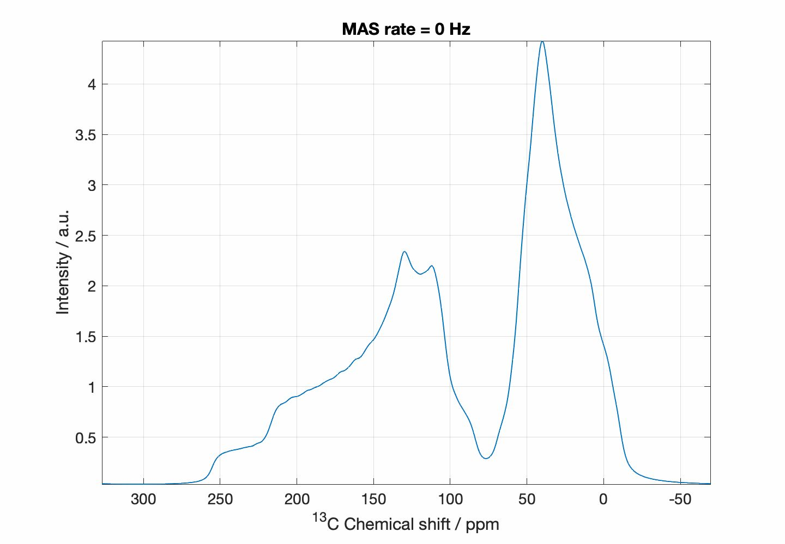
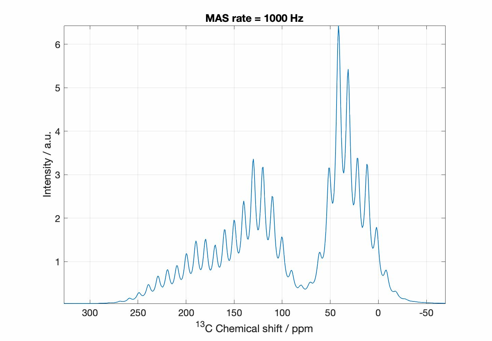
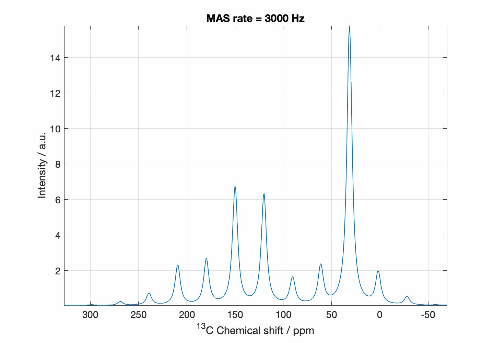
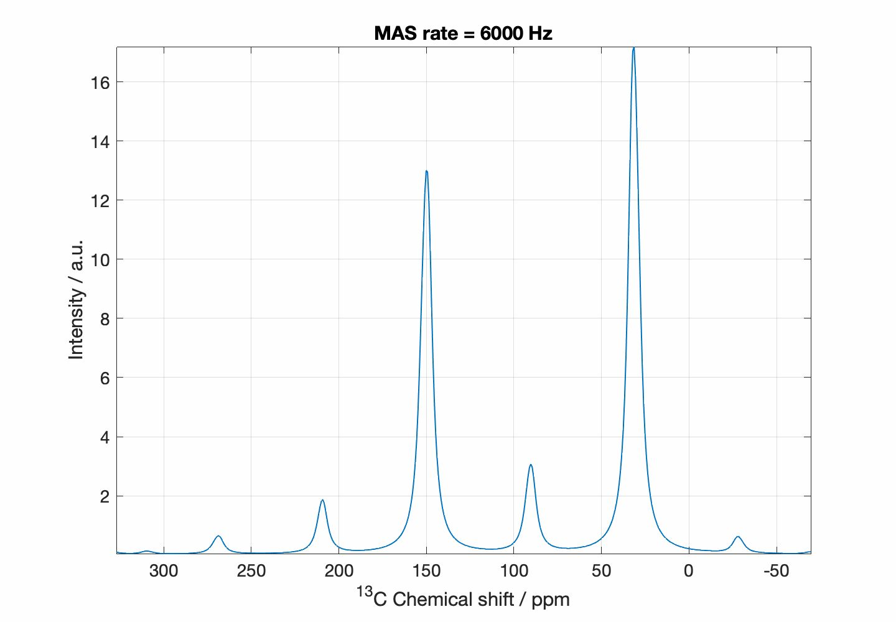
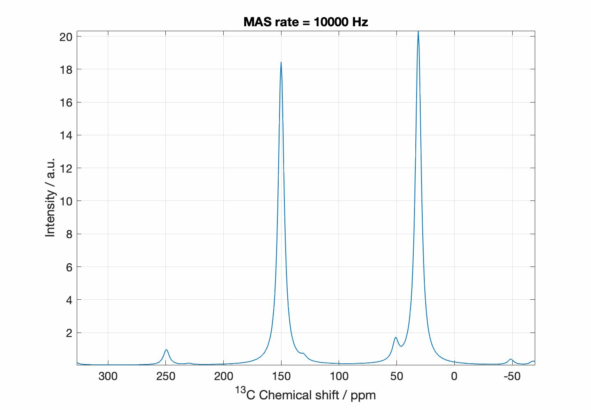
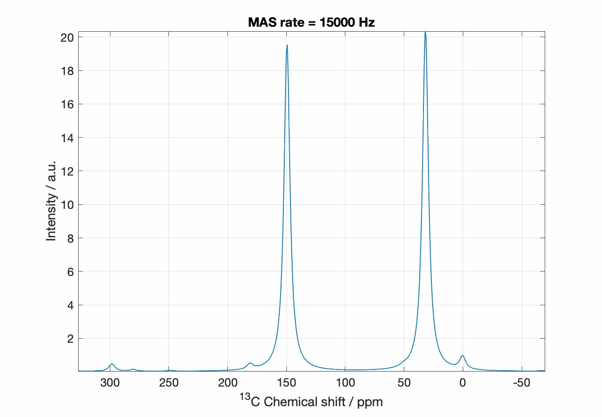
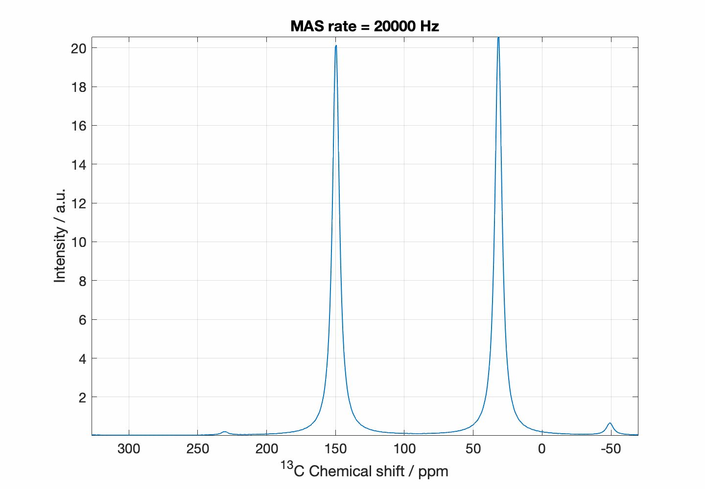

C8870 - Syntéza a analýza materiálů
Kontakt:
Zdeněk Moravec, hugo@chemi.muni.cz
Výukové materiály
Data ze cvičení
Protokol
Protokol ve formátu PDF mi zašlete emailem.
MAS NMR
Vliv rychlosti rotace na vzhled 13C MAS NMR spektra glycinu
Zdroj obrázků: Thomas Kress/Commons






